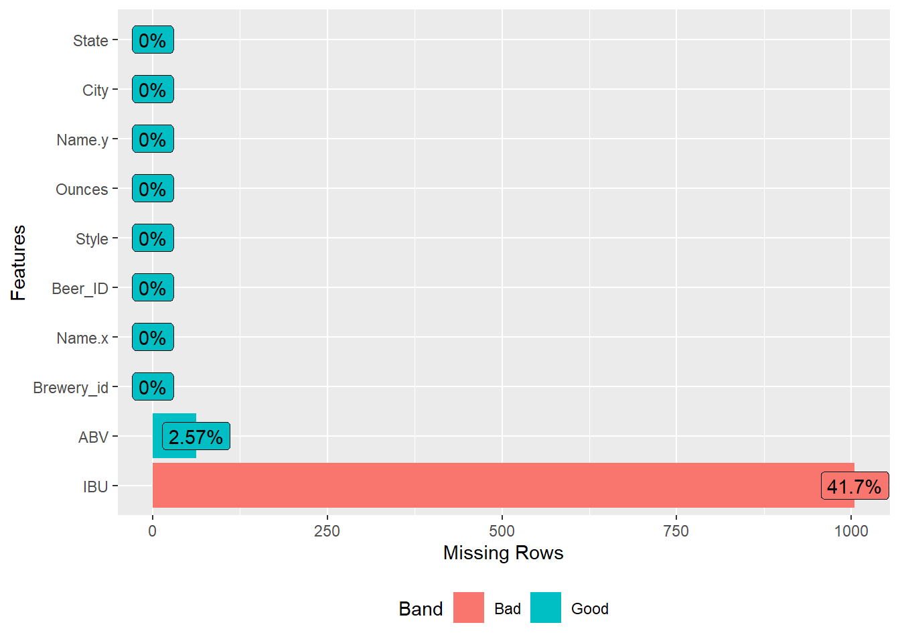

BeerBreweries
Haub
10/11/2021
Call in libraries
library(tidyverse)
library(gridExtra)
library(class)
library(usmap)
library(ggplot2)
library(foreign)
library(haven)
library(ggplot2)
library(foreign)
library(ggplot2)
library(GGally)
library(haven)
library(magrittr)
library(data.table)
library(dplyr)
library(plyr)
library(dplyr)
library(factoextra)
library(ggplot2)
library(ggmap)
library(nycflights13)
library(tidyverse)
library(datasets)
library(readxl)
library(tidyverse)
library(magrittr)
library(DataExplorer)
library(maps)
library(plotly)
library(DT)
library(tidytext)
library(plyr)
library(gridExtra)
library(factoextra)
library(GGally)
library(readxl)
library(tidyverse)
library(magrittr)
library(DataExplorer)
library(maps)
library(plotly)
library(DT)
library(tidytext)
library(gridExtra)
library(factoextra)
library(GGally)
library(gridExtra)
library(graphics)
library(mice)
library(PerformanceAnalytics)
require(PerformanceAnalytics)
library(MASS)
library(reshape)
library(RJSONIO)
library(jsonlite)
library(twitteR)
library(maps)
library(mapproj)
library(knitr)Load in the files
Beers = read.csv("/Users/chris/OneDrive/Desktop/SMU data science/New folder/MSDS_6306_Doing-Data-Science/Beers_and_Breweries/Beers.csv")
Breweries = read.csv("/Users/chris/OneDrive/Desktop/SMU data science/New folder/MSDS_6306_Doing-Data-Science/Beers_and_Breweries/Breweries.csv")Inspecting the files
head(Beers)## Name Beer_ID ABV IBU Brewery_id Style Ounces
## 1 Pub Beer 1436 0.050 NA 409 American Pale Lager 12
## 2 Devil's Cup 2265 0.066 NA 178 American Pale Ale (APA) 12
## 3 Rise of the Phoenix 2264 0.071 NA 178 American IPA 12
## 4 Sinister 2263 0.090 NA 178 American Double / Imperial IPA 12
## 5 Sex and Candy 2262 0.075 NA 178 American IPA 12
## 6 Black Exodus 2261 0.077 NA 178 Oatmeal Stout 12head(Breweries)## Brew_ID Name City State
## 1 1 NorthGate Brewing Minneapolis MN
## 2 2 Against the Grain Brewery Louisville KY
## 3 3 Jack's Abby Craft Lagers Framingham MA
## 4 4 Mike Hess Brewing Company San Diego CA
## 5 5 Fort Point Beer Company San Francisco CA
## 6 6 COAST Brewing Company Charleston SCCreating data frame
df1 = data.frame(table(Breweries$State))
colnames(df1) = c("State","Breweries")
df1 = df1[order(-df1$Breweries),]
#view(df1)
row.names(df1) = NULL
#view(df1)1. How many breweries are present in each state?
# Used the data.table function to find number of breweries per state. Used the knitr kable function to view.
breweries_state <- data.table(table(Breweries$State))
kable(breweries_state)| V1 | N |
|---|---|
| AK | 7 |
| AL | 3 |
| AR | 2 |
| AZ | 11 |
| CA | 39 |
| CO | 47 |
| CT | 8 |
| DC | 1 |
| DE | 2 |
| FL | 15 |
| GA | 7 |
| HI | 4 |
| IA | 5 |
| ID | 5 |
| IL | 18 |
| IN | 22 |
| KS | 3 |
| KY | 4 |
| LA | 5 |
| MA | 23 |
| MD | 7 |
| ME | 9 |
| MI | 32 |
| MN | 12 |
| MO | 9 |
| MS | 2 |
| MT | 9 |
| NC | 19 |
| ND | 1 |
| NE | 5 |
| NH | 3 |
| NJ | 3 |
| NM | 4 |
| NV | 2 |
| NY | 16 |
| OH | 15 |
| OK | 6 |
| OR | 29 |
| PA | 25 |
| RI | 5 |
| SC | 4 |
| SD | 1 |
| TN | 3 |
| TX | 28 |
| UT | 4 |
| VA | 16 |
| VT | 10 |
| WA | 23 |
| WI | 20 |
| WV | 1 |
| WY | 4 |
# Heat map showing number of breweries in each state. Colorado has the most, California has second most.
df1$state = trimws(as.character(df1$State))
p = plot_usmap(data = df1, values = "Breweries",labels = TRUE, color = "red") +
scale_fill_continuous(low = "white", high = "red",
name = "Breweries", label = scales::comma) +
theme(legend.position = "right")
p$layers[[2]]$aes_params$size <- 2.5
p2. Merge beer data with the breweries data.
# Merged the Breweries and Beers DF together on Brewery_id.
merged = merge(x = Beers, y = Breweries, by.x = "Brewery_id", by.y = "Brew_ID", all.x = TRUE)
Beer = merged$Name.x
Brewery=merged$Name.y
head(merged,6)## Brewery_id Name.x Beer_ID ABV IBU Style Ounces Name.y
## 1 1 Get Together 2692 0.045 50 American IPA 16 NorthGate Brewing
## 2 1 Maggie's Leap 2691 0.049 26 Milk / Sweet Stout 16 NorthGate Brewing
## 3 1 Wall's End 2690 0.048 19 English Brown Ale 16 NorthGate Brewing
## 4 1 Pumpion 2689 0.060 38 Pumpkin Ale 16 NorthGate Brewing
## 5 1 Stronghold 2688 0.060 25 American Porter 16 NorthGate Brewing
## 6 1 Parapet ESB 2687 0.056 47 Extra Special / Strong Bitter (ESB) 16 NorthGate Brewing
## City State
## 1 Minneapolis MN
## 2 Minneapolis MN
## 3 Minneapolis MN
## 4 Minneapolis MN
## 5 Minneapolis MN
## 6 Minneapolis MNtail(merged,6)## Brewery_id Name.x Beer_ID ABV IBU Style Ounces
## 2405 556 Pilsner Ukiah 98 0.055 NA German Pilsener 12
## 2406 557 Heinnieweisse Weissebier 52 0.049 NA Hefeweizen 12
## 2407 557 Snapperhead IPA 51 0.068 NA American IPA 12
## 2408 557 Moo Thunder Stout 50 0.049 NA Milk / Sweet Stout 12
## 2409 557 Porkslap Pale Ale 49 0.043 NA American Pale Ale (APA) 12
## 2410 558 Urban Wilderness Pale Ale 30 0.049 NA English Pale Ale 12
## Name.y City State
## 2405 Ukiah Brewing Company Ukiah CA
## 2406 Butternuts Beer and Ale Garrattsville NY
## 2407 Butternuts Beer and Ale Garrattsville NY
## 2408 Butternuts Beer and Ale Garrattsville NY
## 2409 Butternuts Beer and Ale Garrattsville NY
## 2410 Sleeping Lady Brewing Company Anchorage AK3. Address the missing values in each column.
# ABV and IBU Columns contain missing values. ABV column contains 62 missing values and IBU column contains 1,005 missing values. Since ABV contains smaller number of missing values, we can use state level medians to replace those values. IBU contains lot of missing values, Because of that we use a predictive regression model to predict IBU value based on ABV.
# Plotted the missing values.
plot_missing(merged)
# Missing values replaced.
sum(is.na(merged))## [1] 1067which(is.na(merged)) ## [1] 7305 7306 7416 7423 7457 7482 7670 7671 7738 7739 7740 7741 7798 7799 7800 7801 7802
## [18] 7803 7804 7859 8019 8021 8023 8130 8222 8223 8224 8226 8388 8528 8654 8710 8861 9117
## [35] 9122 9149 9154 9181 9326 9407 9408 9414 9457 9464 9472 9489 9490 9491 9492 9526 9575
## [52] 9581 9582 9583 9584 9585 9586 9587 9595 9600 9624 9625 9657 9675 9676 9677 9678 9679
## [69] 9680 9681 9682 9683 9684 9685 9686 9688 9689 9691 9692 9694 9695 9696 9697 9698 9699
## [86] 9700 9701 9702 9703 9704 9705 9706 9707 9708 9709 9710 9711 9712 9713 9714 9715 9716
## [103] 9717 9718 9719 9720 9721 9722 9723 9724 9725 9726 9727 9728 9729 9730 9731 9732 9733
## [120] 9734 9735 9736 9737 9738 9739 9740 9741 9742 9743 9744 9745 9746 9747 9748 9749 9750
## [137] 9751 9752 9753 9754 9755 9756 9757 9764 9765 9767 9770 9775 9779 9785 9792 9798 9799
## [154] 9800 9803 9804 9805 9808 9809 9812 9815 9826 9833 9834 9838 9843 9854 9855 9856 9858
## [171] 9860 9867 9875 9877 9878 9884 9892 9893 9894 9895 9896 9897 9899 9900 9903 9907 9909
## [188] 9910 9911 9912 9913 9914 9917 9918 9927 9931 9932 9933 9934 9936 9937 9938 9939 9940
## [205] 9941 9942 9943 9944 9945 9946 9947 9948 9949 9951 9968 9969 9978 10000 10001 10002 10003
## [222] 10006 10007 10010 10011 10012 10013 10015 10016 10019 10020 10024 10025 10027 10030 10031 10032 10033
## [239] 10035 10037 10039 10044 10050 10051 10052 10053 10056 10057 10058 10059 10060 10062 10063 10079 10080
## [256] 10081 10083 10085 10086 10087 10088 10089 10090 10091 10093 10094 10097 10099 10104 10105 10108 10117
## [273] 10118 10121 10125 10132 10133 10135 10136 10142 10143 10144 10145 10146 10147 10148 10149 10150 10151
## [290] 10155 10178 10179 10180 10181 10186 10187 10188 10189 10197 10199 10201 10202 10208 10209 10210 10211
## [307] 10212 10213 10214 10215 10216 10225 10226 10227 10229 10236 10237 10238 10239 10240 10251 10252 10253
## [324] 10254 10255 10256 10261 10266 10267 10268 10269 10274 10275 10278 10284 10294 10295 10296 10297 10299
## [341] 10301 10302 10303 10304 10305 10306 10322 10323 10336 10344 10353 10355 10358 10363 10365 10369 10372
## [358] 10385 10388 10389 10391 10398 10402 10406 10416 10421 10429 10430 10431 10433 10435 10445 10446 10447
## [375] 10448 10449 10450 10451 10452 10453 10454 10455 10456 10457 10465 10466 10468 10469 10470 10471 10478
## [392] 10479 10480 10481 10484 10488 10489 10493 10496 10501 10502 10503 10515 10516 10517 10518 10519 10520
## [409] 10521 10522 10523 10527 10528 10529 10530 10531 10532 10540 10541 10551 10552 10553 10554 10556 10572
## [426] 10574 10575 10587 10591 10595 10596 10597 10598 10599 10600 10603 10604 10606 10607 10630 10631 10632
## [443] 10633 10634 10635 10636 10640 10641 10643 10650 10651 10653 10662 10663 10664 10668 10669 10672 10673
## [460] 10674 10675 10690 10691 10694 10695 10696 10697 10698 10699 10700 10701 10702 10703 10704 10705 10706
## [477] 10707 10708 10709 10710 10711 10712 10713 10714 10715 10716 10717 10719 10720 10721 10722 10723 10724
## [494] 10725 10726 10727 10728 10729 10730 10731 10733 10734 10736 10737 10743 10758 10759 10760 10761 10762
## [511] 10763 10768 10773 10780 10781 10794 10795 10796 10797 10798 10799 10800 10801 10803 10819 10820 10821
## [528] 10822 10824 10825 10827 10828 10831 10838 10839 10840 10841 10842 10845 10846 10847 10848 10849 10850
## [545] 10851 10852 10853 10854 10855 10856 10857 10860 10870 10871 10872 10873 10875 10877 10878 10879 10880
## [562] 10881 10882 10883 10894 10895 10905 10908 10926 10929 10932 10933 10937 10938 10939 10940 10941 10942
## [579] 10943 10950 10957 10967 10968 10969 10970 10971 10972 10979 10991 11002 11010 11013 11014 11017 11019
## [596] 11021 11022 11023 11026 11027 11028 11029 11030 11031 11032 11034 11036 11038 11039 11040 11041 11044
## [613] 11051 11053 11054 11055 11056 11057 11058 11059 11062 11063 11064 11066 11067 11071 11073 11083 11086
## [630] 11087 11088 11089 11090 11091 11096 11108 11109 11110 11111 11117 11118 11119 11120 11127 11132 11141
## [647] 11143 11146 11148 11149 11150 11151 11155 11163 11165 11182 11184 11185 11186 11187 11188 11190 11191
## [664] 11192 11193 11196 11197 11203 11205 11206 11208 11209 11210 11211 11212 11213 11215 11216 11217 11218
## [681] 11220 11225 11229 11232 11236 11237 11240 11241 11242 11243 11244 11245 11247 11250 11253 11254 11260
## [698] 11267 11268 11269 11270 11271 11272 11273 11274 11275 11276 11277 11280 11290 11291 11294 11295 11301
## [715] 11302 11303 11304 11305 11306 11307 11308 11314 11315 11316 11317 11318 11319 11320 11323 11324 11325
## [732] 11337 11346 11347 11348 11351 11352 11367 11368 11369 11375 11377 11378 11379 11380 11381 11382 11383
## [749] 11385 11386 11388 11389 11394 11395 11401 11405 11406 11412 11419 11420 11421 11422 11423 11424 11425
## [766] 11428 11429 11432 11444 11445 11446 11452 11453 11456 11472 11474 11475 11476 11477 11479 11480 11481
## [783] 11484 11494 11495 11501 11502 11503 11504 11514 11516 11517 11518 11519 11522 11526 11527 11528 11529
## [800] 11530 11531 11532 11533 11534 11535 11540 11549 11554 11555 11556 11557 11558 11559 11560 11561 11562
## [817] 11563 11564 11565 11566 11569 11570 11571 11572 11579 11580 11581 11582 11583 11590 11591 11592 11593
## [834] 11594 11599 11600 11601 11602 11603 11606 11613 11614 11615 11616 11617 11618 11619 11620 11623 11624
## [851] 11625 11631 11632 11633 11634 11635 11636 11637 11639 11640 11641 11642 11644 11646 11647 11648 11649
## [868] 11650 11654 11655 11656 11657 11658 11662 11663 11672 11673 11674 11675 11676 11680 11681 11682 11683
## [885] 11685 11686 11688 11689 11690 11693 11695 11703 11704 11705 11706 11711 11712 11713 11714 11715 11716
## [902] 11717 11718 11722 11724 11725 11726 11727 11728 11729 11734 11735 11736 11742 11745 11746 11752 11753
## [919] 11754 11755 11765 11772 11774 11775 11776 11777 11783 11784 11785 11786 11787 11792 11794 11795 11796
## [936] 11797 11798 11799 11800 11808 11809 11810 11811 11812 11815 11817 11818 11819 11821 11822 11823 11824
## [953] 11825 11826 11827 11836 11837 11838 11841 11844 11845 11846 11854 11855 11856 11857 11867 11868 11874
## [970] 11875 11879 11882 11885 11888 11892 11893 11894 11899 11900 11901 11902 11905 11906 11907 11909 11910
## [987] 11911 11912 11924 11926 11927 11928 11930 11931 11932 11933 11934 11935 11936 11945
## [ reached getOption("max.print") -- omitted 67 entries ]for(i in 1:ncol(merged)){
merged[is.na(merged[,i]), i] <- mean(merged[,i], na.rm = TRUE)
}## Warning in mean.default(merged[, i], na.rm = TRUE): argument is not numeric or logical: returning NA
## Warning in mean.default(merged[, i], na.rm = TRUE): argument is not numeric or logical: returning NA
## Warning in mean.default(merged[, i], na.rm = TRUE): argument is not numeric or logical: returning NA
## Warning in mean.default(merged[, i], na.rm = TRUE): argument is not numeric or logical: returning NA
## Warning in mean.default(merged[, i], na.rm = TRUE): argument is not numeric or logical: returning NAplot_missing(merged)4. Compute the median alcohol content and international bitterness unit for each state.
# ABV has a mean of 5.97%, with a median of 5.7%. The maximum ABV is 12.8%, the minimum ABV is .1%.
# IBU has a mean of 42.71, with a median of 42.71. The maximum IBU is 138, the minimum IBU is 4.
# Median ABV's by state.
median_ABV <- aggregate(ABV ~ State, merged, median)
# Median IBU's by state.
median_IBU <- aggregate(IBU ~ State, merged, median)
# Bar chart for median ABV's by state.
median_ABV <- aggregate(ABV ~ State, merged, FUN = median)
barplot(median_ABV$ABV,
space = .50,
xlab = "State",
ylab = "ABV %",
main = "Median ABV by State",
names.arg = median_ABV$State,
las=3)# Bar chart for median IBU's by state.
median_IBU <- aggregate(IBU ~ State, merged, FUN = median)
barplot(median_IBU$IBU,
space = .25,
xlab = "State",
ylab = "IBU %",
main = "Median IBU by State",
names.arg = median_IBU$State,
las=3)# Summary of statistics for the data set.
summary(merged)## Brewery_id Name.x Beer_ID ABV IBU Style
## Min. : 1.0 Length:2410 Min. : 1.0 Min. :0.00100 Min. : 4.00 Length:2410
## 1st Qu.: 94.0 Class :character 1st Qu.: 808.2 1st Qu.:0.05000 1st Qu.: 30.00 Class :character
## Median :206.0 Mode :character Median :1453.5 Median :0.05700 Median : 42.71 Mode :character
## Mean :232.7 Mean :1431.1 Mean :0.05977 Mean : 42.71
## 3rd Qu.:367.0 3rd Qu.:2075.8 3rd Qu.:0.06700 3rd Qu.: 42.71
## Max. :558.0 Max. :2692.0 Max. :0.12800 Max. :138.00
## Ounces Name.y City State
## Min. : 8.40 Length:2410 Length:2410 Length:2410
## 1st Qu.:12.00 Class :character Class :character Class :character
## Median :12.00 Mode :character Mode :character Mode :character
## Mean :13.59
## 3rd Qu.:16.00
## Max. :32.005. Which state has the maximum alcoholic (ABV) beer? Which state has the most bitter (IBU) beer?
# Colorado has the Maximum ABV at 12.8%.
# Oregon has the Maximum IBU at 13.8%.
# Displays figures for state with highest ABV and IBU.
df2=subset(merged,select=c("State","ABV","IBU"))
# State with highest ABV, CO
maxABV=subset(df2,ABV==max(ABV,na.rm = TRUE))
maxABV## State ABV IBU
## 375 CO 0.128 42.71317# State with highest IBU, OR
maxIBU=subset(df2,IBU==max(IBU,na.rm = TRUE))
maxIBU## State ABV IBU
## 1857 OR 0.082 138ABV.max = aggregate(ABV ~ State, data = merged, FUN = max)
ABV.max[order(-ABV.max$ABV),][1,]## State ABV
## 6 CO 0.128IBU.max = aggregate(IBU ~ State, data = merged, FUN = max)
IBU.max[order(-IBU.max$IBU),][1,]## State IBU
## 38 OR 138# Plot top 5 states with maximum ABV
abv = ABV.max[order(-ABV.max$ABV),][1:5,]
ggplot(abv, aes(x = ABV*100, y = reorder(State,ABV))) +
geom_bar(stat = "identity", width = 0.5, color = "orange", fill = "gold") +
labs(title = "Top 5 States with maximum ABV values", y = "State", x = "ABV percentage") +
theme_bw()+
geom_text(aes(label = paste0(ABV*100,"%"))) +
theme(text = element_text(size = 10))# Plot top 5 states with maximum IBU
ibu = IBU.max[order(-IBU.max$IBU),][1:5,]
ggplot(ibu, aes(x = IBU, y = reorder(State,IBU))) +
geom_bar(stat = "identity", width = 0.5, color = "orange", fill = "gold") +
labs(title = "Top 5 States with maximum IBU values", y ="State") +
theme_bw()+
geom_text(aes(label = IBU)) +
theme(text = element_text(size = 10))7. Is there an apparent relationship between the bitterness of the beer and its alcoholic content?
# .52 correlation, some correlation between the bitterness of beer and it's alcoholic content, however it is not strong (scale -1 to 1).
# Scatter plot
ggplot(merged, aes(x=IBU, y=ABV)) + geom_point() + geom_smooth(method=lm)## `geom_smooth()` using formula 'y ~ x'# Histogram
ggplot(merged, aes(x = ABV)) +
geom_histogram(color="blue", fill="skyblue") +
theme_bw() +
ggtitle("Histogram for ABV")## `stat_bin()` using `bins = 30`. Pick better value with `binwidth`.# Scatter plot
ggplot(df2, aes(x = ABV, y = IBU)) +
geom_point(color = "blue")+
geom_smooth(method = "lm",se = F, color = "red")+
ggtitle("Scatterplot for ABV vs IBU") +
theme_bw()## `geom_smooth()` using formula 'y ~ x'summary(merged$ABV)## Min. 1st Qu. Median Mean 3rd Qu. Max.
## 0.00100 0.05000 0.05700 0.05977 0.06700 0.12800# Correlation test
cor.test(merged$ABV,merged$IBU)##
## Pearson's product-moment correlation
##
## data: merged$ABV and merged$IBU
## t = 29.875, df = 2408, p-value < 2.2e-16
## alternative hypothesis: true correlation is not equal to 0
## 95 percent confidence interval:
## 0.4902622 0.5485495
## sample estimates:
## cor
## 0.5200118. Budweiser would also like to investigate the difference with respect to IBU and ABV between IPAs (India Pale Ales) and other types of Ale (any beer with “Ale” in its name other than IPA). You decide to use KNN classification to investigate this relationship. Provide statistical evidence one way or the other.
minDF = subset(merged, select = c("ABV","IBU","Style","State"),
is.na(ABV) == FALSE & is.na(IBU) == FALSE)
minDF$S1 = NA
for(k in 1:nrow(minDF))
{
if(grepl("IPA", minDF$Style[k], fixed = TRUE) == TRUE)
{
minDF$S1[k] = "IPA"
}
else if(grepl("Ale", minDF$Style[k], fixed = TRUE) == TRUE)
{
minDF$S1[k] = "Ale"
}
}clsdf = subset(minDF, select = c("ABV","IBU","S1","State"), is.na(S1) == FALSE)
clsdf = dplyr::rename(clsdf,Style = S1)Scatterplot graphing the relationship of ABV and IBU in terms of Ale and IPA
ggplot(clsdf,aes(ABV,IBU,color=Style))+
geom_point(shape=4,size=2)+
geom_smooth(method=loess,se=F)Box plot of ABV in Ale and IPA
ggplot(clsdf,aes(Style,ABV,fill=Style))+geom_boxplot()
Box plot of IBU in Ale and IPA
ggplot(clsdf,aes(Style,IBU,fill=Style))+geom_boxplot()The relationship between IBU and ABV in terms of Style(Ale,IPA)
ggplot(clsdf,aes(ABV,IBU,color=Style))+
geom_point(shape=4,size=2)+
geom_smooth(method=lm,se=F)To Compare Two Variances
var.test(IBU~Style,data=clsdf)##
## F test to compare two variances
##
## data: IBU by Style
## F = 0.45314, num df = 962, denom df = 570, p-value < 2.2e-16
## alternative hypothesis: true ratio of variances is not equal to 1
## 95 percent confidence interval:
## 0.3907924 0.5239735
## sample estimates:
## ratio of variances
## 0.4531407Two variance were different
ale=subset(clsdf,Style=="Ale")
ipa=subset(clsdf,Style=="IPA")To test normality of the variables
shapiro.test(ale$IBU)##
## Shapiro-Wilk normality test
##
## data: ale$IBU
## W = 0.89391, p-value < 2.2e-16shapiro.test(ipa$IBU)##
## Shapiro-Wilk normality test
##
## data: ipa$IBU
## W = 0.8946, p-value < 2.2e-16shapiro.test(ale$ABV)##
## Shapiro-Wilk normality test
##
## data: ale$ABV
## W = 0.91104, p-value < 2.2e-16shapiro.test(ipa$ABV)##
## Shapiro-Wilk normality test
##
## data: ipa$ABV
## W = 0.96982, p-value = 1.882e-09# The variables do not have a normal distributionPlot the normality of the variables
qqnorm(ale$IBU)qqnorm(ale$ABV)qqnorm(ipa$IBU)qqnorm(ipa$ABV)Test the difference between ABV in different styles(IPA and Ale), we should use Mann Whiteny test
wilcox.test(clsdf$ABV ~ clsdf$Style)##
## Wilcoxon rank sum test with continuity correction
##
## data: clsdf$ABV by clsdf$Style
## W = 116495, p-value < 2.2e-16
## alternative hypothesis: true location shift is not equal to 0# ABV and Style had a significant difference#ABV and Style had a significant difference
wilcox.test(clsdf$IBU ~ clsdf$Style)##
## Wilcoxon rank sum test with continuity correction
##
## data: clsdf$IBU by clsdf$Style
## W = 91907, p-value < 2.2e-16
## alternative hypothesis: true location shift is not equal to 0# IBU and Style had a significant differenceUsing KNN:
clsdf = subset(clsdf, select = c("ABV","IBU","Style"))
idx = sample.int(n = nrow(clsdf), size = floor(0.7*nrow(clsdf)), replace = F)
train = clsdf[idx,]
test = clsdf[-idx,]
trn_target = train$Style
trn = train[,-3]
tst_target = test$Style
tst = test[,-3]
pred = knn(train = trn, test = tst, cl = trn_target, k = 6)head(pred)## [1] Ale Ale IPA Ale Ale IPA
## Levels: Ale IPATo show confusion matrix:
model_table=table(tst_target,pred)
model_table## pred
## tst_target Ale IPA
## Ale 250 45
## IPA 47 119To test the accuracy:
sum(diag(model_table))/nrow(tst)## [1] 0.8004338Accuracy = NULL
mis = NULL
sen = NULL
spe = NULL
for(i in 1:50)
{
pred = knn(train = trn, test = tst, cl = trn_target, k = i)
head(pred)
model_table=table(trn_target)
tab = table(Predicted = pred, Real = tst_target)
Accuracy[i] = ((tab[1,1] + tab[2,2])/sum(tab))*100
mis[i] = round((tab[1,2]+tab[2,1])/sum(tab),2)
sen[i] = round(tab[2,2]/(tab[2,2]+tab[1,2]),2)
spe[i] = round(tab[1,1]/(tab[1,1]+tab[2,1]),2)
}plot(x = c(1:50), y = Accuracy, xlab = "k", pch = 19, type = "b")
abline(v = which.max(Accuracy), col = "red", lwd = 2)
data.frame(Measure = c("Accuracy","Misclassification Rate","Sensitivity","Specificity"),
Value = c(round(Accuracy[6],2),round(mis[6],2),round(sen[6],2),round(spe[6],2)))## Measure Value
## 1 Accuracy 79.61
## 2 Misclassification Rate 0.20
## 3 Sensitivity 0.69
## 4 Specificity 0.859.Find one other useful inference from the data that you feel Budweiser may be able to find value in.
# Median ounce per state, Colorado had the most followed by California.
oz = aggregate(Ounces ~ State, data = merged, FUN = sum)
ggplot(oz, aes(x = Ounces, y = reorder(State,Ounces))) +
geom_bar(stat = "identity", width = 0.5, color = "blue", fill = "skyblue") +
labs(title = "Median Ounces per State", y = " Ounces") +
theme_bw() +
theme(text = element_text(size = 8.1))co = subset(merged, State == " CO")# Number of ounces for cities in Colorado
oz_co = aggregate(Ounces ~ City, data = co, FUN = sum)
ggplot(oz_co, aes(x = Ounces, y = reorder(City,Ounces))) +
geom_bar(stat = "identity", width = 0.5, color = "blue", fill = "skyblue") +
labs(title = "Number of Ounces for Cities in Colorado", y = " Ounces") +
theme_bw() +
theme(text = element_text(size = 8.1))To evaluate the relationship between Ounces in different cities of Colorado
Anova_result= aov(Ounces ~ City, data = co)
summary(Anova_result)## Df Sum Sq Mean Sq F value Pr(>F)
## City 26 415.3 15.972 3.318 5.61e-07 ***
## Residuals 238 1145.5 4.813
## ---
## Signif. codes: 0 '***' 0.001 '**' 0.01 '*' 0.05 '.' 0.1 ' ' 1minDF1 = subset(co, select = c("Ounces","Style"),is.na(Ounces) == FALSE)
minDF1$S1 = NA
for(k in 1:nrow(minDF1))
{
if(grepl("IPA", minDF1$Style[k], fixed = TRUE) == TRUE)
{
minDF1$S1[k] = "IPA"
}
else if(grepl("Ale", minDF1$Style[k], fixed = TRUE) == TRUE)
{
minDF1$S1[k] = "Ale"
}
}
aggregate(Ounces ~ S1, data = minDF1, FUN = sum)## S1 Ounces
## 1 Ale 1600.0
## 2 IPA 770.4Test Normality of Ounces
shapiro.test(minDF1$Ounces)##
## Shapiro-Wilk normality test
##
## data: minDF1$Ounces
## W = 0.6026, p-value < 2.2e-16qqnorm(minDF1$Ounces)Evaluation of the Ounces between two styles(IPA and Ale) in different cities in Colorado
wilcox.test(minDF1$Ounces ~ minDF1$S1)##
## Wilcoxon rank sum test with continuity correction
##
## data: minDF1$Ounces by minDF1$S1
## W = 3196, p-value = 0.3247
## alternative hypothesis: true location shift is not equal to 0# The difference between ounces and styles was not significant
6. Comment on the summary statistics and distribution of the ABV variable.